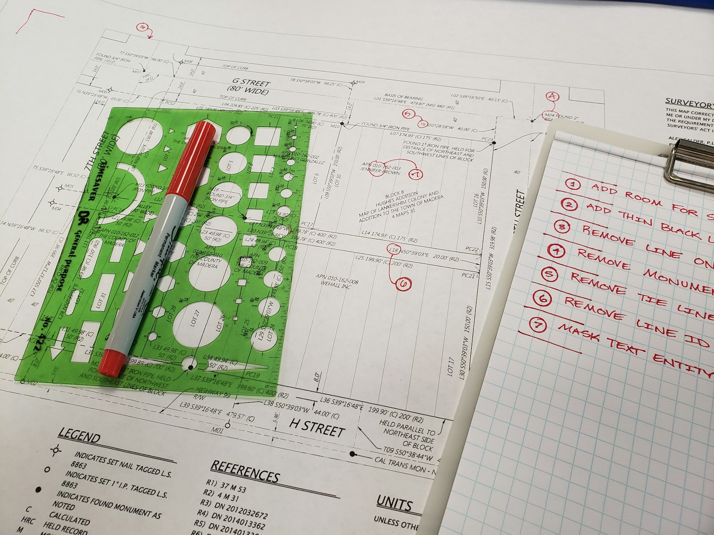

TL;DR
Narrow down software based on your unique needs to avoid costly mistakes. Use tools like Trello for project management at $10/month or Adobe Creative Cloud for designers at $52.99/month. Regularly reassess your choices every 30 days to ensure they align with your evolving workflow.
Quick Verdict: Choosing Software Wisely
### Quick Verdict: Choosing Software Wisely
For solo operators and freelancers, selecting the right software can significantly enhance your efficiency, ultimately saving both time and money. The trick lies in carefully evaluating your unique workflow needs to narrow down your options effectively.
For instance, if you're a graphic designer working mainly with visual elements, Adobe Creative Cloud may be indispensable, offering tools like Photoshop for image editing, Illustrator for vector graphics, and InDesign for layouts—all for a starting price of around $52.99 per month.
Over a year, that's approximately $635.88, a worthy investment if it aligns directly with your core services.
Conversely, if your work involves juggling projects, communication, and deadlines, opting for task management software like Trello or Asana could be a game changer.
Trello starts free, but as you scale up to more advanced features, you might find yourself paying around $12.50 per user per month—resulting in a $150 annual investment.
This streamlined organization can save you substantial hours, allowing you to meet client deadlines and reduce frustration.
However, it's crucial to scrutinize the total cost of ownership. Hidden fees, additional training requirements, and implementation time can add up quickly.
For instance, if you choose to adopt a comprehensive tool like Monday.com, which can cost around $39 per month for a basic plan, consider that onboarding might take a week or more—time that could translate into lost revenue if you’re not managing existing client work.
Imagine a scenario where you’re a freelance marketing consultant who takes on various clients simultaneously. Initially, you might rely on Excel or Google Sheets for tracking projects, but as your client load increases, the limitations of these tools become evident...
Who Each Option Is Actually For: Identifying Your Audience

### Who Each Option Is Actually For: Identifying Your Audience
Understanding your unique software needs means recognizing your role and the specific tasks you’ll undertake. Here’s a detailed breakdown of common solo operator types, along with insights on suitable software options and the financial investments required: 1. Freelance Graphic Designers: These creative professionals frequently use tools that allow them to fully express their artistry. Software like Adobe Creative Cloud (approximately $52.99/month) is essential for graphic design, providing top-tier capabilities in photo editing, vector graphics, and branding.
A designer focused on high-quality deliverables might also consider alternatives like Affinity Designer, which is a one-time payment of about $54.99, making it a more budget-friendly option for those just starting. 2. Content Creators: This includes bloggers, YouTubers, and podcasters who rely heavily on editing software. Tools such as Final Cut Pro (a one-time purchase of $299.99) offer advanced video editing features tailored for high-quality production, while Adobe Premiere Pro (approximately $20.99/month) offers versatility for different media.
The investment in these softwares can significantly impact content quality and audience engagement, leading to better monetization opportunities. 3. Online Coaches: Effective communication is vital for coaches. Platforms such as Zoom (starting at $14.99/month) facilitate seamless client interaction, while Kajabi (around $149/month) provides robust tools for course creation and client management. Investing in such software can enhance client retention and satisfaction, directly correlating to revenue growth. 4. Consultants: Many consultants prioritize customer relationship management (CRM) software, with HubSpot costing around $50/month, which becomes critical for managing leads, follow-ups, and client relationships. A well-organized CRM can potentially lead to increased sales conversions of 20-30%...
Where the Differences Start to Matter: Feature Trade-offs
### Where the Differences Start to Matter: Feature Trade-offs
When examining software, certain features can make or break the decision for solo operators. Understanding where the trade-offs lie can help you maximize both your budget and productivity.
- Cost vs. Features: One of the most significant trade-offs you’ll encounter is between cost and features. Higher-priced software often offers advanced functionalities that can translate into saved time and improved efficiency.
For example, a subscription to Monday.com starts at $8 per user per month, but if you scale up to the Pro plan at around $16/user/month, you gain access to features like advanced automations that can save hours a week in project management.
A solo operator working on multiple projects might discover that automating status updates and reminders frees up an hour a day—roughly 20 hours a month—which translates to saved time worth $1,000 or more, depending on your billing rate.
- Scalability: Many tools are designed with small teams in mind, and their pricing can become prohibitive as you grow. A classic example is Slack, which offers a free version but quickly escalates to $12.50 per user/month.
For a solo operator working in a consulting capacity, the free version may suffice initially, but if you decide to expand your services and bring on subcontractors, the costs can escalate rapidly without much additional value for the expense.
If you went from paying nothing to employing 3 subcontractors, you jump from $0 to $37.50/month, which can heavily impact your bottom line.
- Integration Capabilities: Integration is another critical factor. Does the software you’re considering easily connect with tools already in your workflow?
For instance, if you’re using Google Workspace for emails and documents, ensure that your project management tool integrates seamlessly...
A Real Setup or Buying Scenario: Putting Theory into Practice
### A Real Setup or Buying Scenario: Putting Theory into Practice
Let’s consider a practical scenario: imagine you're a freelance writer aiming to enhance your productivity. Your workflow consists of distinct phases—drafting, editing, and managing client communications.
Choosing the right software can significantly impact your efficiency and output quality. Here’s a sample setup you might select: 1. Google Docs (Free): This platform is perfect for drafting and collaborating, allowing for real-time edits with clients. As a writer, you might spend about 30% of your workweek (approximately 12 hours) on drafting documents. Google Docs’ seamless sharing features streamline feedback loops, enabling faster revisions and client approvals. 2. Grammarly Premium ($12/month): With its advanced grammar and style suggestions, Grammarly can improve your writing quality. If you typically spend about 10 hours a month on editing, this tool may help you cut that down to around 7 hours, saving you a solid 3 hours each month.
Over a year, these time savings equate to about 36 hours—roughly 4 regular workdays. The cost of $144 annually could be considered low if it allows you to take on additional freelance work or increases your client satisfaction rates significantly. 3. Trello ($10/month): To manage assignments, deadlines, and client communications, a task management tool like Trello can provide clarity and keep you organized. Imagine you receive an average of 5 client projects per month.
If each project requires 1 hour of organization and tracking, Trello could reduce that to 30 minutes by allowing you to visualize all tasks in one place. That’s a saving of 2.5 hours monthly (30 hours annually)—a considerable benefit when balancing multiple projects.
Adding these costs together, your annual software expenses would be approximately $264. But let’s say you also decide to use Canva for visual content, which costs around $120 per year.
This brings your total annual cost to $384...
Mistakes and Overkill Choices: What to Avoid
Mistakes and Overkill Choices: What to Avoid
Many solo operators encounter common pitfalls when selecting software, leading to frustration and budget overruns. Here’s where you should tread carefully: 1. Overcomplicating Choices: Purchasing software with an excessive feature set can overwhelm your operations and underutilize your setup. For instance, if you're a freelance graphic designer primarily looking for a project management tool, opting for a comprehensive all-in-one solution like ClickUp could lead to confusion.
You might spend hours navigating endless configurations and features, resulting in less time for actual design work. Consider this: a simple tool such as Trello, which focuses on task tracking, may only cost around $10/month, while the all-in-one package could set you back $25/month or more.
If you end up using just a fraction of what you're paying for, that overcomplication can diminish productivity and increase costs significantly. 2. Ignoring Customer Support: Selecting an elegant tool without verifying the customer support options can backfire severely. Let’s say you choose a project management software that looks attractive and user-friendly but offers limited support hours.
If a critical feature malfunctions and your support ticket is only addressed three days later, this could halt your workflow, particularly if you’re up against a deadline. In contrast, investing in a tool like Asana, known for its responsive customer service and a plethora of online resources, might save you crucial hours of downtime, enabling you to meet your commitments without skipping a beat. 3. Neglecting Reviews & Comparisons: Skipping the analysis of previous user reviews or engaging in feature comparisons can lead to regrettable choices. Take, for example, a solo marketing consultant who decided to implement a brand-new social media management software with insufficient reviews...
Final Recommendation by User Type: Tailoring Your Choice
When it comes down to the final decision-making, consider these tailored recommendations for various user types: - Graphic Designers: Opt for Adobe Creative Cloud for its diverse tools, priced at $52.99/month.
It’s perfect for heavy design needs. - Writers: Use Google Workspace paired with Grammarly. This combination can cost around $12/month for premium grammar features, fostering content quality and flexibility.
- Consultants: A tool like HubSpot (starting at $50/month) offers excellent client management features. - Freelancers Generally: Consider Trello ($10/month) for task management; it’s adaptable to different workflows.
- Online Coaches: Using Zoom for video sessions and Kajabi for course creation can streamline operations efficiently.
Your choice should align not only with budget flexibility but also with your immediate productivity goals. If you find yourself frequently handling clients or projects, initially spending on a robust tool may swiftly yield significant returns.
Regularly analyze your use patterns every 30 days and be ready to adjust as needed.
FAQ
What should I consider first when selecting software for my needs?
Start by evaluating your primary tasks and what software features will streamline them. Focus on key functionalities that directly relate to your income-generating activities.
How can I determine if a software tool is worth the investment?
Calculate the time saved versus the cost of the software. If the time savings lead to increased productivity or client satisfaction, the investment is likely worthwhile.
Are there free alternatives to paid software that are effective?
Yes, many tools like Google Docs, Trello, and Canva offer free versions that can serve basic needs well. Evaluate your requirements before opting for premium pricing.
How often should I reassess my software choices?
It's advisable to review your software choices every 30 days, especially as your workload and needs evolve. This will help you avoid unnecessary expenses.
What common mistakes should I avoid when investing in software?
Avoid overcomplicating your choices and selecting software without thorough research. Align your selections with your specific workflow to avoid wasting resources.
This article focuses on providing practical guidance and is regularly reviewed to ensure the information remains up-to-date for users.
Choose faster
Use this article to narrow the field then compare your top options by price, setup friction, and upgrade risk.
Search more articles
Find related tools, workflows, and guides.
Photo credits
- Photo 1: mali desha via Unsplash
- Photo 2: Scott Blake via Unsplash
- Photo 3: Ryland Dean via Unsplash
- Photo 4: Weiwei via Unsplash
- Photo 5: Akhmad Muzakir via Unsplash